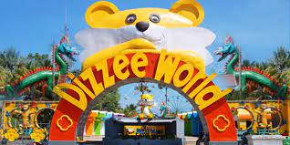

Coimbatore
Often termed as 'Manchester of South India', Coimbatore, the second-largest city in Tamil Nadu, photographically situated on the banks of River Noyyal. Coimbatore, also known as Kovai, is a welcoming area with the backdrop of hustle-bustle and charm of activity and industry.
From ancient temples to classy new buildings, from breathtaking mountains to jaw-dropping waterfalls, from mouth-watering cuisine to pleasant weather all year round, Coimbatore has everything you could possibly need to make for a perfect holiday experience. Coimbatore is home to a massive 112 feet tall statue of Lord Shiva, known as the Adiyogi Shiva Statue. Featured in the Guinness Book of World Records, this architectural masterpiece is a very popular tourist spot in Coimbatore and stands as a symbol of self-transformation and inner peace.
Velliangiri Hills
The Velliangiri Mountains, a part of the Nilgiri Biosphere Reserve, are situated at the Western Ghats border of Coimbatore district, Tamil Nadu bordering Palakkad District, Kerala. Known as the “Sapthagiri, 7 Hills – Seven Mountains”, these mountains are held and revered on par with spiritually most powerful place on the planet – Mount Kailash, the legendary abode of Lord Shiva. On the top of the Velliangiri Mountains, Shiva is worshipped as Swayambhu, one who is self-created and in this form, he graces the devotees. It takes a 15-km uphill trek to reach the temple on the top of the seventh hill. Though pilgrims are advised to stray from the path, some go in search of unexplored areas.

MGM Dizzee World
MGM Dizzee World is one of the largest and oldest amusement parks in India. It boasts of having had given its visitors some unique experiences, many of which were first-timers. It brought Jurong's Bird Show from Singapore to India way back in 1999. It also had a hot air balloon ride in 1998, and even though it sounds unbelievable, there were arrangements for picking up and dropping visitors on a helicopter back in 2000 - probably the first time in the history of entertainment park business.
All the rides in MGM Dizzee World are created and engineered keeping in mind the visitors' enjoyment. There are extreme level thrill rides, but nice and enjoyable ones are there too. The park has something for all age group. There are a plethora of children's rides scattered all around the park, as well as activities that other members of the family can enjoy. The amusement park offers an ideal venue for a tremendous day-out excursion with your family and kids. It also has an aqua park, fitted with various fun-filled rides and activities like artificial ocean waves, which you can enjoy with your friends and family.
Rameshwaram
Rameshwaram is located on a beautiful island in the South Indian state of Tamil Nadu. It is separated by a small Pamban channel from Sri Lanka. According to Hindu mythology, this is the place where Lord Rama created a bridge across the sea to Sri Lanka.
Rameshwaram has the first sea bridge connecting the town of Mandapam with Pamban Island, and Rameswaram. Abdandoned town of Dhanushkodi is also located on Pamban Island which was a bustling town until it got destroyed in 1964 by cyclone.
Renowned for its magnificent prakaras with massive sculptured pillars on either side, The Ramanathaswamy Temple houses the longest corridor in the world. Agniteertham is famous for its sacred waters and Pilgrims perform poojas in honour of their ancestors at this seashore. The five-faced Hanuman Temple holds the floating stone which was used to build the bridge between India and Sri Lanka.
Ooty
Nestled amidst Nilgiri hills, Ooty, also known as Udagamandalam, is a hill station in Tamil Nadu which serves as a top-rated tourist destination. Once regarded as the summer headquarters of the East India Company, the Queen of the hills is a picturesque getaway.
Dotted with tea gardens, serene waterfalls, winding country lanes, and charming colonial architecture, Ooty is the perfect respite everyone. Popular among couples and honeymooners, Ooty allures its visitors with the panoramic views of the Nilgiri mountains.
The Nilgiri mountain railway is the steepest track in all of Asia. Remember the hit song 'Chaiyya Chaiyya' where Shahrukh Khan and Malaika Arora matching steps on top of a train? Remember the breathtaking locales as the train chugged its way across lush greenery? Yes, that was the Nilgiri Mountain Railways, and the Nilgiri Mountains all along.
Kanyakumari
Bordered by the three seas - Arabian, Indian and the Bay of Bengal, Kanyakumari is the southernmost tip of the Indian Peninsula. A small coastal town in the state of Tamil Nadu, Kanyakumari was earlier known as Cape Comorin.
Kanyakumari offers the marvellous confluence of the Bay of Bengal, the Arabian Sea and the Indian ocean meeting together at a point. But, this is not a miracle, the miracle lies in the beauty that the water of three seas does not mix, you can clearly distinguish between the turquoise blue, deep blue and sea green waters of the three seas. To enjoy the best view of sunset and sunrise, you can visit the Triveni Sangam point and the famous View tower.
The town has a mountainous terrain with elevated patches of hills, coconut trees and lined with paddy fields. Kanyakumari is also the only place in India where you can observe the sunrise and sunset at the same beach.
Dhanushkodi
Dhanushkodi is a small, sparsely populated beach town on the coast of Tamil Nadu. In the 1964, Dhanushkodi was hit by one of the worst storms India has ever seen. Ever since then, Tamil Nadu has rebuilt this town to become one of the most unique and unusual beach towns of India.
This small town redefines the term isolated. Cut off from the rest of the world, this town seems untouched by time. While the rest of India is vying to get ahead in the race for prosperity, this town seems frozen in history, reflecting it grandeur and beauty.
Chidamabaram
A beautiful temple town in the Cuddalore District of Tamil Nadu, Chidamabaram is famous for housing the marvellous Lord Nataraja Temple and the famed chariot festival. Situated 250 kms away from the city of Chennai, Chidambaram has been a place of architectural glory and religious importance since antiquity.
It has been ruled by several dynasties over time namely Cholas, Pandyas, Vijayanagar rulers, Marathas and the British. Due to the cultural influences, it boasts of a rich heritage and traditions. It is famous for its many temples which are a marvellous rendition of the Dravidian style of architecture and a beautiful representation of Dravidian culture.
Apart from its authentic history, the town is a slice of paradise for nature lovers and bird watchers. Pichavaram backwater is one of the many highlights of this region. For tourists, Chidambaram is all about relishing nature's beauty and soaking up the spirituality ambience.
Madurai
Madurai, the cultural capital of Tamil Nadu, is one of the oldest continuously inhabited cities of India. Ruled by Pandya kings for the longest time in its history, it is called as the 'Lotus City' as it was planned and built in the shape of a lotus. Madurai is known for Meenakshi Amman Temple, dedicated to the goddess Meenakshi with a sanctum for her consort, Sundareshwarar.
There are many other ancient temples in Madurai, including Thiruparankundram. It is one of the important old temples dedicated to Lord Muruga(Karthikeya) and is located on a hillock approximately 8 km from the city. Having trade ties with ancient Rome, the place holds a great cultural heritage. With bustling bazaars and fantastic street food, Madurai has heritage walks conducted throughout the day. Madurai is instrumental in promoting Tamil language and preserving the culture.